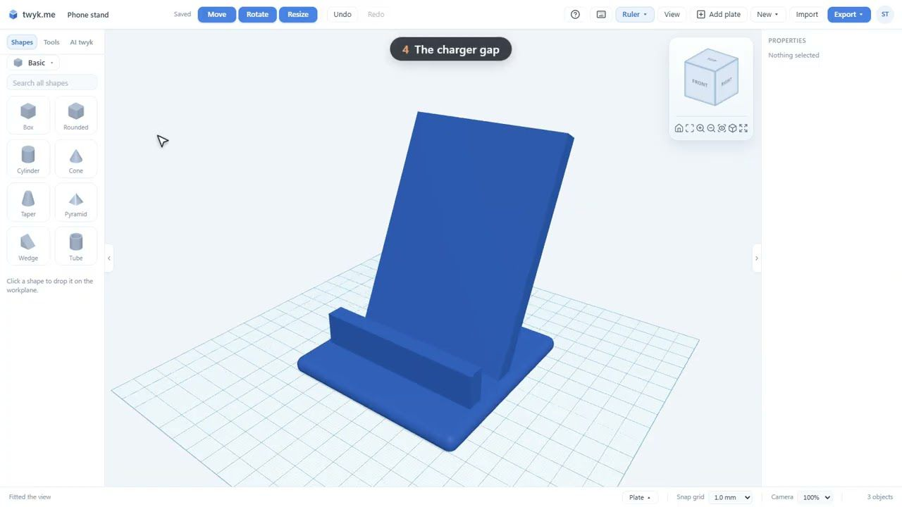

7:00
7:00
3D Print a Knitted Christmas Tree in Parts: Texture, Pins and Gold Rings
A Christmas tree that looks hand-knitted, made to print in parts.
Real things to build in twyk, each with a video walkthrough and exact sizes. Watch it, then open the editor and make your own.
A five-minute tour of everything twyk can do, built from real printable parts. Shapes, text, formulas, tiles, flex tests, AI and export, in five minutes.
Each one is built by hand in the video, with the sizes and print settings in the write-up. Pick a group, or browse them all.
7:00
A Christmas tree that looks hand-knitted, made to print in parts.
 3:00
3:00
A heart-shaped ornament filled with organic Voronoi lace, with a solid edge round it and a loop to hang it by.
 2:14
2:14
A cookie cutter in the shape of a sitting dog, 80 mm wide.
 2:50
2:50
A wall mount that holds two PS5 DualSense controllers and a headset: each controller sits on a tongue that slides in between its grips, and the…
 2:18
2:18
A personalised Christmas tree decoration: a flat bauble 70 mm across with the children's names, Mia and Leo, in raised script, little stars, and a…
 3:13
3:13
A chubby penguin figure, 70 mm tall, sculpted by hand from spheres: the body and head melted together into one smooth shape with Sculpt, then a white…
 2:44
2:44
A stepped spice rack for six jars 45 mm wide: two tiers of three, so the back row stands higher and you can read every label.
 2:28
2:28
A deck box for 100 sleeved Magic: The Gathering cards (or any standard-size card game): a box with a thumb notch to get the cards out, and a lid that…
 2:05
2:05
A stand that holds an iPad sideways, in landscape, nearly upright: tilted back 20 degrees, which is the angle you want when you are lying down.
 2:32
2:32
A wall hook strong enough for a loaded backpack: a thick arm with an upturned tip, two counterbored screw holes, and the most important part for…
 3:06
3:06
A planter for a 90 mm nursery pot, with a rolled rim, drain holes, the plant's name standing out on the front, and a matching drip tray printed on a…
 2:57
2:57
A GoPro mount that clamps onto a 32 mm bike handlebar: a split ring tightened with an M3 bolt, and the standard GoPro three-prong mount on top, for…
 2:21
2:21
A set of drawer bins sized to the 42 mm Gridfinity grid, filling a 3 x 2 space: a long bin for pens, three small bins, and a block with a slot that…
 2:27
2:27
A headset stand sized for the SteelSeries Arctis Nova Pro (it fits most over-ear headsets): a weighted base with your gamertag in raised letters, a…
 2:39
2:39
A clip that pushes onto the edge of a 25 mm thick desk and holds three cables of different sizes: 6, 9 and 12 mm.
 2:49
2:49
A phone holder for the car that clips onto horizontal air vent slats: a cradle for a phone up to 80 mm wide and 14 mm thick with its case on, and two…
 2:23
2:23
A desk tidy that holds four pens, stands your phone upright, and keeps a pad of 76 mm sticky notes in a tray, all on one base 190 mm wide.
 2:13
2:13
Replacing a small broken plastic part: a clip for a blind, 15 mm wide, with a C-shaped hook that snaps onto a 10 mm rail and a 4 mm hole for its pin.
 2:45
2:45
A personalised desk plaque, a gift you make yourself: "WORLD'S BEST DAD" and his name in raised letters inside a border, on a plaque that prints…
 2:21
2:21
A bone-shaped name tag for a dog: the name raised on the front in its own colour, and your phone number engraved into the back, with a hole for the…

2:52A phone stand for video calls, built from scratch in a few minutes: it holds a phone with its case on (up to 12 mm thick), leans it back 25 degrees…
 2:35
2:35
A replacement knob for an oven or cooker with the common 6 mm D-shaped shaft: 35 mm across, with grip ridges, a pointer line, and a D-shaped hole…
Four videos that teach the editor by building something real. Take them in order, or jump to the one you want.
Build a desk caddy with a hexagonal pen cup, phone stand and card slot, and learn the editor as you go.
Raised and engraved text, shapes from math formulas, and honeycomb tiles, with real prints to make.
Hollow a planter, cut a tall part, test a flexi ring and twist a vase, with live previews and undo.
Ask for a model, send a photo or build with code, and keep full control of every step.
The same job done in both tools, side by side. See also the full comparison.
The same two jobs, cutting a part in two and lining parts up, done in Tinkercad and in twyk.
A chubby penguin figure starts as two spheres: a body and a head.
A twisted vase, made in Tinkercad and in twyk, filmed for real with a clock on screen.
All videos live on the twyk YouTube channel.
Free, in your browser. Sign in with Google and start from a shape.
Start building →